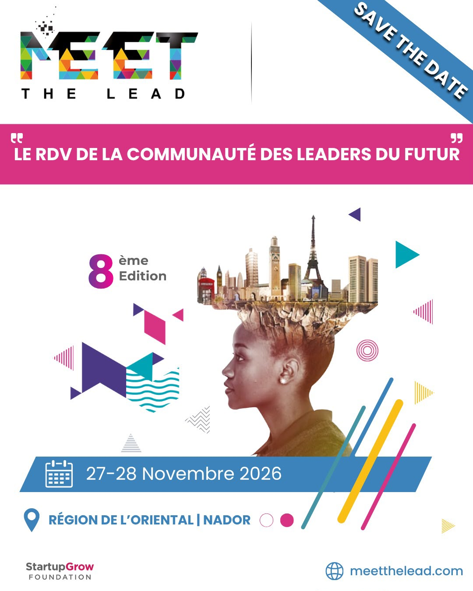

Job Day
- Forum de recrutement exclusif
- Rencontres employeurs – talents
- Ateliers carrière personnalisés
- Opportunités locales et internationales
Hackathon, Job Day, keynotes, panels et networking : découvrez le déroulé des deux journées.
8ème édition – Meet The Lead · 27 & 28 novembre 2026 · Cité des Métiers et des Compétences (CMC), Nador
Industrie 4.0 · Agriculture · Eau
Bridge To Job
Allocutions officielles :
Thématique : La nouvelle ambition industrielle du Maroc : investissements, compétitivité et intégration dans les chaînes de valeur internationales.
Intelligence artificielle, souveraineté numérique et confiance : les nouveaux enjeux de la transformation économique du Maroc.
Thème : Tanger Med – Nador West Med : quelle ambition pour le positionnement économique du Maroc en Méditerranée ?
Célébration de l’innovation et des talents de demain
Remise officielle des prix aux équipes gagnantes du Hackathon (Industrie 4.0, Agriculture et Eau).
De Tanger Med à Nador West Med : l’Oriental, nouveau carrefour de l’investissement et de la compétitivité
Innovation & économie des services : connecter les écosystèmes et accélérer l’ambition méditerranéenne
Révéler les talents et faire grandir les entreprises de demain
Restitution des recommandations des panels et mot de la fin.
Au-delà des conférences, Meet The Lead propose des expériences concrètes pour révéler les talents et les connecter aux opportunités.
Rejoignez la communauté des leaders du futur pour la 8ème édition de Meet The Lead. Les places sont limitées : réservez dès maintenant.
